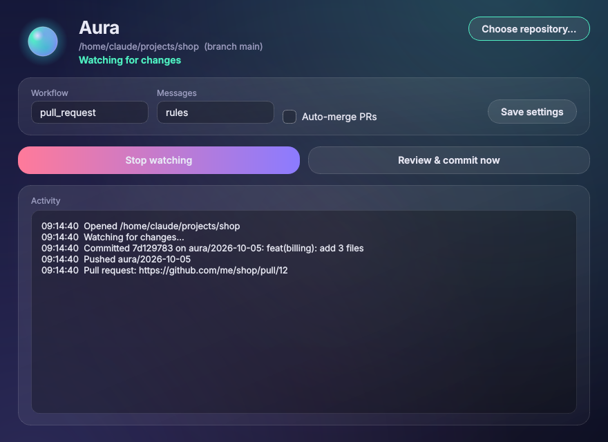
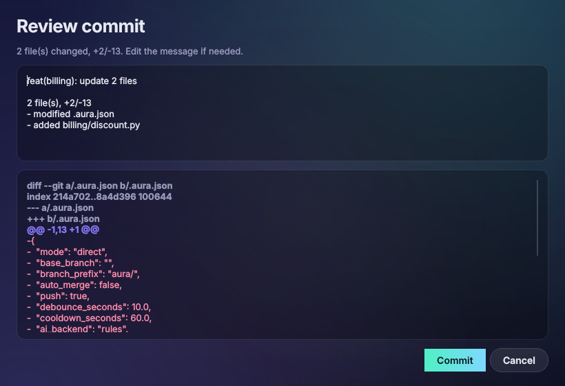

Aura watches your repository, waits until you stop editing, and proposes a clean Conventional Commit. Approve it and Aura commits, pushes and opens the pull request on GitHub or Azure DevOps. It all runs on your machine.
$ aura commit 2 changed file(s): added billing/invoice.py +2/-0 added billing/tax.py +2/-0 Proposed commit message: | feat(billing): add 2 files | 2 file(s), +4/-0 Commit? [Y]es / [e]dit summary / [d]iff / [n]o: y Committed 7d129783 on aura/2026-10-05: feat(billing): add 2 files Opened pull request: https://github.com/me/shop/pull/12
Read from an environment variable or the OS keychain, and never written into the remote URL, Git config or logs.
Previews are computed in a temporary index, so partially staged work stays exactly as you left it.
The rule-based writer needs no network. Ollama is optional and its output is validated before use.

